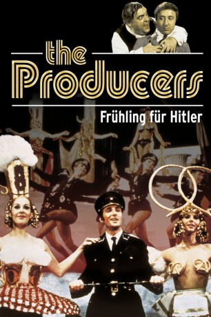
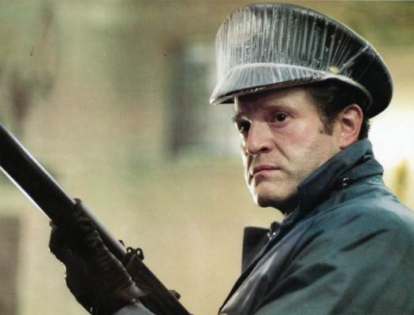

#9641 Frühling für Hitler
Alternativ: The Producers
Auszeichnungen: 1 Oscars gewonnen für 1 Oscars nominiert
 
 IMDB-Wertung: 7.7 / 10
IMDB-Wertung: 7.7 / 10  Metascore: 0
Metascore: 0 
Zunächst massenhaft Geld bei Investoren einsammeln, dann mit minimalen Kosten ein todsicher zum Scheitern verurteiltes Theaterstück auf die Bühne bringen, sich mit dem Differenzbetrag nach Brasilien absetzen und die Geldgeber leer ausgehen lassen: Mit diesem nicht ganz legalen Plan versuchen der mittlerweile notorisch erfolglose Broadway-Produzent Max Bialystock und der windige Buchprüfer Leo Bloom zu Geld zu kommen. Nachdem mit dem durchgeknallten Drehbuchautor und Altnazi Franz Liebkind, dem als Regisseur völlig überforderten Roger De Bris und dem Hippie und Möchtegernmimen Lorenzo St. DuBois (dessen Initialen L.S.D. kommen nicht von ungefähr) das notwendige Personal gefunden worden ist, scheinen die Voraussetzungen für einen Flop optimal erfüllt zu sein.
Jahr: 1967
Dauer: 89 Minuten
FSK: 12
Land: USA Studio: 'AVCO Embassy Pictures'Tonspuren: DD2.0 - ,
Untertitel: Deutsch,
Auflösung: 1080p (1920x1040) Größe: 6696 MB
Genre: Musik, Komödie
Regisseur:  Mel Brooks
Mel Brooks
Drehbuch: Mel Brooks
Soundtrack: John Morris
Darsteller:
- Estelle Winwood als Hold Me Touch Me
 Renée Taylor als Eva Braun
Renée Taylor als Eva Braun William Hickey als The Drunk
William Hickey als The Drunk- Barney Martin als Göring
- Christopher Hewett als Roger De Bris
- Andréas Voutsinas als Carmen Ghia
- Lee Meredith als Ulla
 Kenneth Mars als Franz Liebkind
Kenneth Mars als Franz Liebkind Dick Shawn als L.S.D. - Lorenzo St. DuBois
Dick Shawn als L.S.D. - Lorenzo St. DuBois Gene Wilder als Leo Bloom
Gene Wilder als Leo Bloom- Zero Mostel als Max Bialystock
- Bernie Allen als Auditioning Hitler (uncredited)
 Mel Brooks als Singer in 'Springtime for Hitler' (uncredited)
Mel Brooks als Singer in 'Springtime for Hitler' (uncredited)- Ron Charles als Auditioning Hitler (uncredited)
- Diana Eden als Showgirl (uncredited)
-  Hank Garrett als Stagehand (uncredited)
- Linda Gillen als Sax Player (uncredited)
 Bill Macy als Jury Foreman (uncredited)
Bill Macy als Jury Foreman (uncredited)- Robert Paget als Auditioning Hitler (uncredited)
- Tucker Smith als Lead Dancer (uncredited)
- David Patch als Goebbels
- Shimen Ruskin als The Landlord
- Frank Campanella als The Bartender
- Josip Elic als Violinist
- Madelyn Cates als Concierge
- John Zoller als Drama Critic
- Brutus Peck als Hot Dog Vendor
- Anne Ives als Lady
- Amelie Barleon als Lady
- Lisa Kirk als Lady
- Nell Harrison als Lady
- Mary Love als Lady
- Rusty Blitz als Auditioning Hitler (uncredited)
- John Braden als Bar Patron (uncredited)
- Julia Cohn als Woman (uncredited)
- Mae Crane als Showgirl (uncredited)
- Robert Dahdah als Theatre Audience Member (uncredited)
- Michael Davis als Production Tenor (uncredited)
- David Evans als Lead Dancer (uncredited)
- Anthony Gardell als Auditioning Hitler (uncredited)
- Trent Gough als Auditioning Hitler (uncredited)
- Zale Kessler als Jason Green (uncredited)
- Mary Loane als Women in Theatre; investor (uncredited)
- Lore Noto als Audience Member (uncredited)
- Patrick Owens als Theatre Orchestra Pit Conductor (uncredited)
- Arthur Rubin als Auditioning Hitler (uncredited)
- Clifton Steere als Nazi in Play (uncredited)
- Bud Truland als Whiskey Sours Orderer (uncredited)
Datei: X:\1967\Frühling für Hitler (1967, FSK12, 1920x1040).mkv seit 01.10.2018
Festplatte: HD 1900-1970
 Es gibt insgesamt 24 Filme in der Gruppe '1967'
Es gibt insgesamt 24 Filme in der Gruppe '1967'